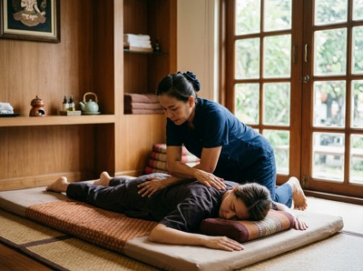

Thai massage in Merchant City puts one of Glasgow's most vibrant and culturally rich neighbourhoods within easy reach of genuine therapeutic care.
Merchant City draws professionals, creatives, students, and long-term residents. They live and work among its sandstone streets, independent galleries, and well-regarded restaurants. It is an area with real energy and real pace.
The people who call it home often carry the physical effects of both.
Serendipity Massage Therapy & Wellness is on Hope Street in Glasgow's city centre. That is a short walk west of Merchant City. If you are based around Ingram Street, George Square, or the Trongate, you can walk it in under fifteen minutes.
Whether you come over on a lunch break, after an early evening shift, or at the end of a busy week, Serendipity is genuinely close.

The area's professional and creative workforce is exactly the kind of clientele who benefit most from regular massage. Long hours at a desk, time on your feet in hospitality, or the mental load of creative and business work all cause muscle tension, postural strain, and disrupted sleep.
Serendipity addresses these directly. It does not offer a generic hour of relaxation.
Serendipity offers a full range of therapeutic and relaxation treatments. You can book your session online at any time to secure your preferred day and time.
From Merchant City, Serendipity is easy to reach on foot or by public transport. Walking west along Ingram Street or Argyle Street takes around twelve to fifteen minutes.
Glasgow Queen Street station is the nearest rail stop to Merchant City. From there, it is a short walk or a single bus stop to Hope Street.
Buchanan Street subway station is also walkable from Merchant City in about ten minutes. It puts you close to the streets that lead directly to Serendipity.
Several bus routes run between Merchant City and the city centre along the main east-west streets. The journey is straightforward at most times of day.
Serendipity is a professional team practice, not a sole trader or a chain. Every therapist is trained to the same standard, using techniques developed by head therapist Jariya Malone.
Those techniques draw from the traditional Thai massage tradition and are shaped for clear, repeatable results. That consistency matters — especially for clients who want to build regular sessions into their routine rather than take a chance each time.
For Merchant City residents and workers dealing with neck and shoulder tension, back pain, or the build-up of a busy working life, Serendipity offers something simple: skilled, professional care, close to home. Book online to find a time that fits your schedule.
Merchant City takes its name from the planned district built from the 1750s onwards. It was designed for Glasgow's wealthy tobacco, sugar, and tea merchants.
In the 1980s, the Scottish Development Agency led an urban renewal effort that turned a largely empty commercial quarter into the mixed-use neighbourhood it is today. For more on the area's history and character, see Merchant City on Wikipedia.
Serendipity is on Hope Street in Glasgow city centre, roughly twelve to fifteen minutes on foot from the heart of Merchant City. The walk takes you west through the city grid and is easy at any time of day. If you prefer not to walk, buses on the main east-west routes connect the two areas in just a few minutes.
Glasgow Queen Street station is the nearest rail stop to Merchant City. It sits close to the walking route towards Hope Street. Buchanan Street subway station is about ten minutes on foot from Merchant City. It puts you near the city centre streets that lead to Serendipity. Several bus services also run between the two areas throughout the day and evening.
Same-day availability depends on the current schedule, but it is often possible, especially mid-week. The quickest way to check is through the online booking page, which shows live availability. If you want a specific time or treatment, booking a day or two ahead gives you more choice.
Thai massage is a strong choice for anyone carrying the effects of long or irregular working hours. It uses acupressure and assisted stretching to release muscle tension and improve range of motion. No oils are used, which makes it practical for a session during or after a working day. If you are also dealing with stress or disrupted sleep, aromatherapy massage uses therapeutic-grade essential oils to tackle both the physical and mental load at once.
Serendipity offers appointments across daytime and evening hours to suit working schedules. For current availability and confirmed hours, check the booking page or call the team on 0141 673 6630. The online system shows real-time availability, so you can see exactly what fits your week.